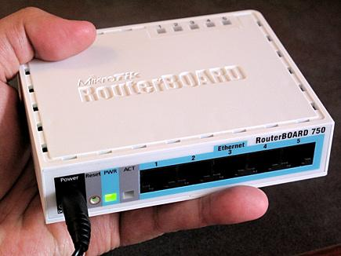

//Pembahasan
Router adalah perangkat network yang digunakan untuk menghubungkan beberapa network, baik network yang sama maupun berbeda dari segi teknologinya seperti menghubungkan network yang menggunakan topologi Bus, Star dan Ring. Router minimal memiliki 2 network interface. Dalam postingan sebelumnya tentang mengenal teknik subneting telah disinggung bahwa koneksi antar network (jaringan dengan subnet IP yang berbeda) hanya bisa terjadi dengan bantuan Router.

Gambar diatas merupakan salah satu contoh router yaitu Mikrotik Rb 750 yang merupakan router dengan ukuran kecil dan harga yang terjangkau (sekitar 350 ribuan) yang dapat kita gunakan untuk keperluan koneksi jaringan internet dirumah, warnet atau di kantor. Salah satu kelebihan dari Mikrotik router ini terletak pada kemudahan konfigurasi dan kehandalan fitur dengan harga yang relatif murah.

Cara Kerja Router
Pada gambar diatas terdapat 2 buah network yang terhubung dengan sebuah router. Network sebelah kiri yang terhubung ke port 1 router mempunyai alamat network 192.168.1.0 dan network sebelah kanan terhubung ke port 2 dari router dengan network address 192.155.2.0:
Pengertian Firewall adalah sistem keamanan jaringan komputer yang digunakan untuk melindungi komputer dari beberapa jenis serangan dari komputer luar.
Pengertian Firewall yang dimaksudkan diatas adalah sistem atau perangkat yang memberi otorisasi pada lalu lintas jaringan komputer yang dianggapnya aman untuk melaluinya dan melakukan pencegahan terhadapa jaringan yang dianggap tidak aman. Fire-wall dapat berupa perangkat lunak (program komputer atau aplikasi) atau perangkat keras (peralatan khusus untuk menjalankan program fire-wall) perangkat yang menyaring lalu lintas jaringan antara jaringan. Perlindungan Firewall diperlukan untuk komputasi perangkat seperti komputer yang diaktifkan dengan koneksi Internet. Meningkatkan tingkat keamanan jaringan komputer dengan memberikan informasi rinci tentang pola-pola lalu lintas jaringan. Perangkat ini penting dan sangat diperlukan karena bertindak sebagai gerbang keamanan antara jaring komputer internal dan jaringan komputer eksternal.
Secara umum Firewall digunakan untuk mengontrol akses terhadap siapapun yang memiliki akses terhadap jaringan privat dari pihak luar. Saat ini, pengertian firewall difahami dengan istilah generik yang merujuk pada fungsi firewall sebagai sistem pengatur komunikasi antar dua jaringan yang berlainan. Mengingat sekarang ini banyak perusahaan yang memiliki akses ke Internet maka perlindungan terhadap aset digital perusahaan tersebut dari serangan para hacker, pelaku spionase, ataupun pencuri data lainnya, sehingga fungsi fire-wall menjadi hal yang sangat esensial.”

Ilustrasi Firewall